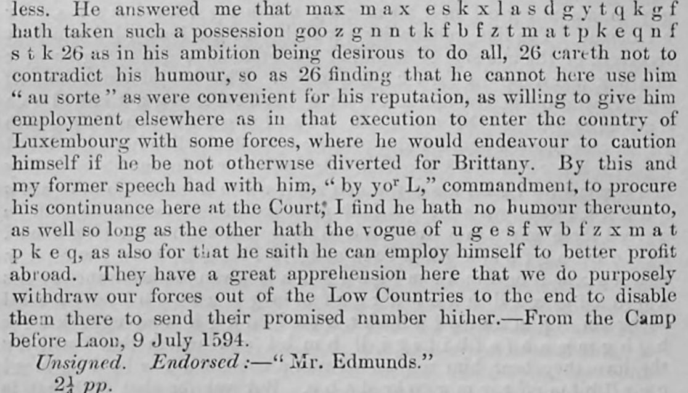

At a glanceCiphertext-only break · partial (39% of cipher tokens valued, not the word count)
- The letter
- Thomas Edmondes, the Queen’s agent with Henri IV, to a lord he does not name, from the camp before Laon, 9 July 1594. The letter is in clear English except for 16 runs of cipher letters and several signs for persons.
- Where
- Hatfield House, Cecil Papers (the calendar gives no volume or folio). Known here only from the print: Historical Manuscripts Commission, Calendar of the Manuscripts of the Marquis of Salisbury, part IV (1892), pp. 559–560, whose editor printed the 651 cipher letters as letters and gave no decipherment. Not on DECODE.
- The cipher
- A letter cipher on the 24-letter alphabet: the alphabet shifted seven places, with extra equivalents for common letters taken from the same alphabet shifted eight and ten places, occasionally eleven and twenty. Signs and figures stand for persons.
- How it was deciphered
- The key was recovered from the printed letters alone. The three shifts were chosen on one half of the letters, frozen, and tested on the other half, where no shuffled key came close. A second agent recovered the same key independently.
- What it says
- The person shown as 55 sets out why he should take a command in Brittany: it could correspond with England, has “those of the relligion of Poictou” beside it, and port towns to give the English a footing; and he will not stay at court while Marshal Biron commands the army.
- Still open
- 15 printed letters, the person signs and figures, the values chosen by sense and the assumed misprints. Only the manuscript at Hatfield, not seen, could settle them.
- Credit
- Andrew Beling, with AI agents: the lead, the transcription from the print, the key, the held-out test and the reading (14 November 2026).
01 The letter and the print
The calendar prints the letter headed “[Thomas Edmondes] to ——”, dated “From the Camp before Laon, 9 July 1594”, and described as “Unsigned. Endorsed:—‘Mr. Edmunds.’ 2¼ pp.”. The editor set the cipher as runs of letters and printed the person signs as cuts or figures: a sign like a handwritten 55 (twice), a script m with a hooked underline (twice), a barred “ho” and a different looped cut (once each), and the figures 4s, 300 (twice) and 26 (three times). The volume’s index lists the letter among cipher letters it left without a decipherment.
The letter speaks of “yor L.” commandment, so it is addressed to a lord, who is not named. Lord Burghley is possible, since the letter is in the Cecil Papers, but it is not established. The National Archives’ entry “Edmondes to Burghley, and copy” of the same day (SP 78/33 f. 345) is a different letter, wholly in clear, with its clerk’s copy; it shares no sentence with this one.
The two transcriptions made here, one by each agent and the second made before it opened the first, agree on all 651 printed letters. A roman “to” set between two cipher runs on p. 559 is kept out of the 651; read as cipher it gives “he will”, which is weak. The second figure on p. 559 is 300, not 800 as in the Internet Archive text.
02 The key
The alphabet has 24 letters, a to z without j and v. The base is the alphabet shifted seven places: cipher a is plain h, b is i, m is t, s is a, x is e, so “the” is m a x or m a w. 490 of the 636 deciphered letters take the base value. Common plain letters have extra equivalents from the alphabet shifted eight and ten places, now and then eleven and twenty: e is written x, w, t, s or i; a is s, p, r, o or e; d is w, s, h, r or v. Several printed letters therefore carry two or three values, chosen by context. Printed u is taken as cipher n and printed v as u, as if the editor misread a secretary hand; a few single values look like misprints.
The cuts and figures are a small nomenclator for persons or states. None is deciphered. By content alone, 55 is probably the duc de Bouillon, 26 probably the King, and 300 England or the Queen; this is inference, and the reading prints the signs as they stand.
03 What the cipher says
The clear text says that the Duke of Montpensier, ordered back to Brittany, has pressed 55 to go with him. In cipher, Montpensier’s own reason: because of “the many occasions needing his presence in Normandie” he cannot also hold the government of Brittany, and would “only make a iourney thither to install him therin”.
Then 55’s case, in cipher. For utility: “the conueniencie of that countrie to hould correspondencie wth us”; on one side 4s and on the other “those of the relligion of Poictou”; once planted there he could “gett some porttownes into his handes to geiue us footing” and hoped for “places uppon the riuer”. For facility: he is desired by the country, and the governor of Rennes has promised that on his arrival “he will declare himselfor the relligion wherof he hath long since made seceret profession” (one f in the cipher for “himself for”). 55 counts on “the succors of Poictou in anie necessitie” and hopes the English will “extend themselfes also to som assistance towardes him”.
On p. 560, asked whether he would rather serve in the coming war in Artois and Hainault, 55 answers that “the mareshal of Byron” has taken such possession of governing the army under 26 that 26 will not cross him. Edmondes finds he will not stay at court while the other has the vogue of “comandinge the army”.

The governor of Rennes is very probably René Marec de Montbarot, governor from 1583 to 1605. His secret Protestantism is the letter’s claim; no reference found here says he was a Protestant. The full reading, with every word that rests on a value chosen by sense marked, is in the Full texts section.
04 Method and tests
The shifts were found by scoring all 2,024 sets of three shifts with a four-letter model of English of the 1590s, built from Unton’s correspondence and Edmondes’s own clear letters. Chosen on the first 350 letters, the set (7, 8, 10) was frozen and tested on the last 301: it scored −4.095 per letter, and none of 200 shuffled keys did as well (best −4.651). In a stricter test that chose the base too on one half only, (7, 8, 10) was chosen from either half and ranked first of 2,024 sets on the other. The test covers the tested key only: 58 of the 636 deciphered letters need shift 20, shift 11 or a value added by hand, which rest on whole words. The repository’s validator does not apply to a cipher with this many values per letter, so the held-out tests are the statistical check.
The share is counted in sure words: a word is sure when every letter is deciphered and comes from the tested key with no value chosen by sense and no weak reading. That gives 57 of 147 words (38.8%). Of the rest, 38 words take a value chosen by sense, 29 need a letter outside the tested key, 6 are weak, 5 are unread runs and 12 are the person signs and figures. Counting every word deciphered, the figure is 130 of 147. Daniel Bourdeau’s count of sure words is 63; the difference is set out in the notes. The reading was read as sentences by an integration review of 16 November 2026 (an AI agent, not a person; grade B). No person has checked it.
05 What remains uncertain
- 15 printed cipher letters not deciphered: two runs in A2 (“a d m” and “g k l”, around “gouuerment”), one letter and five letters in A11, and “goo” in B1. The print may misread them; only the manuscript would tell.
- The person signs 55, the m-sign, the ho-sign and the oo-sign, and the figures 4s, 300 and 26 (12 occurrences). One letter only, and no key or decipherment is known.
- Weak words: “by” (printed g taken as q), “gouuernor” (printed q taken as g), the “relligion” of the governor’s sentence, “some”, “he will” (the roman “to” taken as cipher), and “(v)ehement”, for which the second agent offered “adhement”.
- Every value chosen by sense among the two or three a printed letter carries, and the assumed g/q and n/u misreadings: the Hatfield manuscript would show whether the homophones were marked.
Full texts
The transcription and the decryption of every document on this page, so that the reading can be used and checked. Short files are shown here; all are in the repository.
Edmondes to an unnamed lord, camp before Laon, 9 July 1594 (HMC Salisbury IV, pp. 559-560) read in part
Montpensier presses the person shown by sign 55 (probably the duc de Bouillon, by content only) to go with him to Brittany; 55 argues that Brittany could hold correspondence with England, has the Protestants of Poitou beside it and port towns to give the English a footing, that the governor of Rennes will declare himself Protestant, and he hopes for assistance; he will not stay at court while Marshal Biron commands the army.
Builds coherent sentences, but under the read bar of 95% of words read as sense (39% here); the holes are marked in the reading.
Transcription
# The whole printed entry, as it stands in Historical Manuscripts Commission, Calendar of the Manuscripts of the
# Most Hon. the Marquis of Salisbury, K.G., preserved at Hatfield House, Hertfordshire, Part IV (London, 1892),
# pp. 559-560. Read from the Internet Archive page images (item 11576077bsb, leaves 581-582:
# https://archive.org/details/11576077bsb), 14 Nov 2026; the Internet Archive OCR text was used as a draft and
# corrected on the images. Line breaks are the page's; hyphenation kept.
#
# Conventions
# <<...>> the cipher, letters exactly as printed (spacing as printed: the tight groups are the typesetter's,
# not word divisions of the manuscript). 651 cipher letters, identical in the two transcriptions
# (pass1.txt, and verifier_blind.txt made blind by a second agent).
# {55} a cut (a facsimile of a handwritten sign) printed in the line: "55" in script, twice.
# {m_} a cut like a script "m" with a hooked underline, twice ("with {m_} told {m_}").
# {ho} a cut like "ho" (or "no") with a bar, once ("receive {ho} advice").
# {oo} a different cut, like a looped "w" or "oo" over a stroke, once ("if {oo} should give").
# 4s, 300, 26 figures set in ordinary type in the clear text (4s once, 300 twice, 26 three times).
# "to" in "m a p m a to b d d": set in roman like an English word; read here as two cipher letters (t o =
# e w, "that he will"). It is not counted in the 651.
[THOMAS EDMONDES] to ——.
1594, July 9.—Since the resolution here taken upon the negotiation
of Sir Roger Williams for the return of the Duke of Montpensier into
Brittany, the said Duke hath used earnest instance towards {55} to
accompany him thither to assist him in that service, making the
reason of his desire to be that, because in respect of the many occa-
sions <<fxxw bfza blhk t l t f r t b f f g k e p f s b t>> he shall not be
able also <<mg a g n d h a d m z g n n i k e i f m g k l>> that he would
therefore <<g f d q e r c w r b g u k f w q m a b m a w k m g b f l m r
d d a b e m a w k b f>>. Whereupon {55} having speech with
{m_} told {m_} that he was desirous therein to receive {ho}
advice and opinion; that if {oo} should give him encouragement
therein, he would the more willingly embrace the offer. And first,
for argument of utility <<s d d x z x w m a x v g f u x f b x f v b x
g y m a s m r g n f m k b t m g a g n d s v g k k t k h g f s t f r
b t omaul>>. The like commodity <<g k f i b z a f g n k a gg h i>> which it
receiveth of the one side of 4s and of the other side <<g x m a g l w g x
m a w k w d d b z b g f g t h g b q m g n>>. That he did assure himself
<<p s b f z h d o f m x w m a x k x m g t x s t d x m g z x mm l g ce
h g k m m g o f x l bf mg a bla p f s t l m g z t b n t n l v g g m b
f z>> in case of need and did also promise himself the like hope <<k g k h d
e g i l n h h g f m a w k b n w k>>. Secondly, for inducements of facility
<<m a o m a s b l r s l b k s r p g m a s g g n f m k b s m a o m m a x z
q u u x k f gkg y k a x f x l>> hath promised him as soon as he shall be
arrived there <<m a p m a>> to <<b d d s t r d p k t a b e l i d k g k m a i
r i d d b z b g f o ai k g k ai ae m a dg fz l b f g i e r v w l w r t k w
m h k g x w ll bg f m a r m l g e g x m a w>> given him assurance in <<g z
x b n x f g x x d h x s w a x e x f m m g m a t r p u l t g v k t d d
bz bg fm a p m a t r p f p ll nk t. a b e l i d k g k m ail uggg k l g k
h g b g m g n b f e f b i f i g i ll b m b i>> and hopeth that I will for
the love they bear him <<w p m w f v m a w e l w d x w l r d l g m g l
g e r ll b l m r f t w m g oo kr sl a b e>>. But yet for that 300 that is
only capable to preserve that country, and without whose effectual help
it will be lost, he desireth me to advise and resolve him how 300 doth
affect and will yield to embrace the succouring thereof, that if otherwise it
be destined to run the wrack of ruin he may avoid the dishonour of perish-
ing under his hands. The speech thereof ended, he further told me
that whereas it was now in question to resolve upon the opening of the
war in Artois and Hainault, this siege ended and Chasteautirry also
reduced, and to that end to deal with the State to turn head thither with
their forces, he desireth you, making known to her Majesty that you
[p. 560]
have received such notice from him, to sound her disposition how she
can like thereof, either whether she can be content to join in concurrency
therein, standing for her share of the acquisition that shall be made
thereof, or, not affecting to bear part herself in it, can like that the
war should otherwise be proceeded in by them and those of the Low
Countries. And therewith did conjure me particularly to tell him
plainly what I conceived thereof. I told him that her Majesty having
rejected so great offers as have been made to her, as of the sovereignty
of the Low Countries and others of good consequence, shewed to have
no enterprising honour, and therefore that I did not think she would
now savour the taste of a part whereof she had refused the whole:
howbeit, that I knew not whether she would have better affection for
what should accrue to her by way of conquest. And for the second
point, whether her Majesty would give allowance to them to do, that I
also thought not, as neither desiring that they should settle a posses-
sion in the Low Countries, nor also that those of the Low Countries
should change their dependency on her to them, which that proceeding
would draw on, and whereinto some humours did already shape. He
answered me smiling, that we ought to do the one or the other, and not
to be like the dog in the manger. For the proceeding in the said war,
it is in consultation either to join their forces here with theirs of the Low
Countries to go to besiege Dunkirk, or else to make a general ravage in
the Provinces of Artois and Hainault, and to build forts upon the pas-
sages of the rivers, out of the which distress which thereby the towns
will receive, and with the intelligence which they presume to have
already in some of them, and the general desire of that people to shake
off the Spanish yoke, they hope of a great revolt amongst them. I
asked him if that war went forward, he meant to employ himself therein,
in the which case the former proposition for Brittany would be fruit-
less. He answered me that <<max m a x e s k x l a s d g y t q k g f>>
hath taken such a possession <<goo z g n n t k f b f z t m a t p k e q n f
s t k>> 26 as in his ambition being desirous to do all, 26 careth not to
contradict his humour, so as 26 finding that he cannot here use him
"au sorte" as were convenient for his reputation, as willing to give him
employment elsewhere as in that execution to enter the country of
Luxembourg with some forces, where he would endeavour to caution
himself if he be not otherwise diverted for Brittany. By this and
my former speech had with him, "by yor L." commandment, to procure
his continuance here at the Court, I find he hath no humour thereunto,
as well so long as the other hath the vogue of <<u g e s f w b f z x m a t
p k e q>>, as also for that he saith he can employ himself to better profit
abroad. They have a great apprehension here that we do purposely
withdraw our forces out of the Low Countries to the end to disable
them there to send their promised number hither.—From the Camp
before Laon, 9 July 1594.
Unsigned. Endorsed:—"Mr. Edmunds."
2¼ pp.Decryption
# Decryption of the printed cipher, segment by segment (labels as in transcription/pass1.txt).
# Line 1 the printed letters, line 2 the plain letter each is read as, line 3 the words.
# Marks: ° value chosen by sense among the values the printed letter carries in this reading;
# † weak (a misprint assumed, or a single value found nowhere else); ? not read.
# The roman "to" printed between A10.0 and A10.1 is read as cipher e w ("that he will"); see NOTES.
A1.1 f x x w b f z a b l h k t l t f r t b f f g k e p f s b t
n e e d i n g h i s p r e s e n c e i n n o r m a n d i e
needing° his presence° in normandie°
A2.0 m g a g n d h a d m z g n n i k e i f m g k l
t o h o u l d ? ? ? g o u u e r m e n t ? ? ?
to hould° ??? gouuerment ???
A3.0 g f d q e r c w r b g u k f w q m a b m a w k m g b f l m r d d a b e m a w k b f
o n l y m a k e a i o u r n e y t h i t h e r t o i n s t a l l h i m t h e r i n
only make° a° iourney thither to install° him therin
A4.0 s d d x z x w m a x v g f u x f b x f v b x g y m a s m r g n f m k b t m g a g n d s v g k k t k h g f s t f r b t o m a u l
a l l e g e d t h e c o n u e n i e n c i e o f t h a t c o u n t r i e t o h o u l d c o r r e s p o n d e n c i e w t h u s
alleged° the conueniencie° of that° countrie° to hould° correspondencie° wth° us
A5.0 g k f i b z a f g n k a g g h i
o r n e i g h b o u r h o o d e
or neighbourhoode°
A6.0 g x m a g l w g x m a w k w d d b z b g f g t h g b q m g n
o f t h o s e o f t h e r e l l i g i o n o f p o i c t o u
of° those of° the relligion of° poictou°
A7.0 p s b f z h d o f m x w m a x k x m g t x s t d x m g z x m m l g c e h g k m m g o f x l b f m g a b l a p f s t l m g z t b n t n l v g g m b f z
b e i n g p l a n t e d t h e r e t o b e a b l e t o g e t t s o m e p o r t t o w n e s i n t o h i s h a n d e s t o g e i u e u s f o o t i n g
being° planted° there to be° able° to gett some°† porttownes° into his handes° to geiue us footing°
A8.0 k g k h d e g i l n h h g f m a w k b n w k
f o r p l a c e s u p p o n t h e r i u e r
for° places° uppon the riuer
A9.0 m a o m a s b l r s l b k s r p g m a s g g n f m k b s m a o m m a x z q u u x k f g k g y k a x f x l
t h a t h e i s d e s i r e d b y t h e c o u n t r i e t h a t t h e g o u u e r n o r o f r h e n e s
that° he° is desired° by°† the° countrie° that° the gouuernor°† of rhenes
A10.0 m a p m a
t h a t h
that h
A10.1 b d d s t r d p k t a b e l i d k g k m a i r i d d b z b g f o a i k g k a i a e m a d g f z l b f g i e r v w l w r t k w m h k g x w l l b g f m a r m l g e g x m a w
i l l d e c l a r e h i m s e l f o r t h e r e l l i g i o n w h e r o f h e h a t h l o n g s i n c e m a d e s e c e r e t p r o f e s s i o n t h a t s o m o f t h e
ill declare° himselfor° the relligion°† wherof° he hath° long since° made° seceret° profession° that° som of° the
A11.0 g z x b n x f g x x d h x s w a x e x f m m g m a t r p u l t g v k t d d b z b g f m a p m a t r p f p l l n k t a b e l i d k g k m a i l u g g g k l g k h g b g m g n b f e f b i f i g i l l b m b i
? g e i u e n o f ? ? ? ? ? e h e m e n t t o t h e c a u s e o f r e l l i g i o n t h a t h e c a n a s s u r e h i m s e l f o r t h e s u c c o r s o f p o i c t o u i n a n i e n e c e s s i t i e
? geiuen of° ????? ehement to the cause° of° relligion that he can° assure himselfor° the succors° of° poictou° in anie° necessitie°
A12.0 w p m w f v m a w e l w d x w l r d l g m g l g e r l l b l m r f t w m g o o k r s l a b e
e x t e n d t h e m s e l f e s a l s o t o s o m a s s i s t a n c e t o w a r d e s h i m
extend° themselfes° also° to som assistance° towardes° him
B1.1 m a x m a x e s k x l a s d g y t q k g f
t h e t h e m a r e s h a l o f b y r o n
the the mareshal° of byron°
B1.2 g o o z g n n t k f b f z t m a t p k e q n f s t k
? ? ? g o u u e r n i n g e t h e a r m y u n d e r
??? gouuerninge the army under°
B2.1 u g e s f w b f z x m a t p k e q
c o m a n d i n g e t h e a r m y
comandinge° the army
# words read 130, unread runs 5; words marked ° 67, marked † 4 (plus "he will" across the printed "to", counted in A10.0 "that h" and A10.1 "ill")Reading
# Thomas Edmondes to an unnamed lord, from the camp before Laon, 9 July 1594: the reading
The whole letter as the Historical Manuscripts Commission printed it (*Calendar of the Manuscripts of the Marquis of
Salisbury*, part IV, 1892, pp. 559-560), with our reading of the cipher put in place of the printed cipher letters.
Conventions:
- **Bold** is read from the cipher (original spelling, word division ours). Everything else is the calendar's clear
text, as printed.
- ° the word rests on a letter whose value was chosen by sense: the printed letter carries more than one value in
this reading (`keys/key_table.tsv`), and here it takes a less common one, or it is one of the letters with no
dominant value (s, r, o, v, c). 67 of the 130 words read carry this mark.
- † weak: the word needs a misprint to be assumed or a value found nowhere else ("by", "gouuernor", the
"relligion" of the governor's sentence, "some"), or, for "he will", that the roman "to" the calendar prints between
two cipher runs is two cipher letters (t = e, o = w).
- ? one printed cipher letter not read (15 letters in all). A run of ? standing alone counts as one unread word, the
least number of words its letters can make (an estimate; Holes are counted by words, 14 Nov 2026).
- [55], [m-sign], [ho-sign], [oo-sign], 4s, 300 and 26 are the person signs and figures as the calendar prints them.
None of them is deciphered. Our guesses at them are in NOTES.md, marked as inference.
- In "himselfor" (twice) the cipher has one f for "himself for".
---
Since the resolution here taken upon the negotiation of Sir Roger Williams for the return of the Duke of
Montpensier into Brittany, the said Duke hath used earnest instance towards [55] to accompany him thither to assist
him in that service, making the reason of his desire to be that, because in respect of the many occasions
**needing° his presence° in Normandie°** he shall not be able also **to hould° ??? gouuerment ???** that he would
therefore **only make° a° iourney thither to install° him therin**. Whereupon [55] having speech with [m-sign] told
[m-sign] that he was desirous therein to receive [ho-sign] advice and opinion; that if [oo-sign] should give him
encouragement therein, he would the more willingly embrace the offer. And first, for argument of utility
**alleged° the conueniencie° of that° countrie° to hould° correspondencie° wth° us**. The like commodity
**or neighbourhoode°** which it receiveth of the one side of 4s and of the other side **of° those of° the relligion
of° Poictou°**. That he did assure himself **being° planted° there to be° able° to gett some°† porttownes° into his
handes° to geiue us footing°** in case of need and did also promise himself the like hope **for° places° uppon the
riuer**. Secondly, for inducements of facility **that° he° is desired° by°† the° countrie°, that° the gouuernor°† of
Rhenes** hath promised him as soon as he shall be arrived there **that he will† declare° himselfor° the
relligion°† wherof° he hath° long since° made° seceret° profession°; that som of° the** given him assurance in
**? geiuen of° ????? (v)ehement to the cause° of° relligion, that he can° assure himselfor° the succors° of°
Poictou° in anie° necessitie°** and hopeth that I will for the love they bear him **extend° themselfes° also° to
som assistance° towardes° him**. But yet for that 300 that is only capable to preserve that country, and without
whose effectual help it will be lost, he desireth me to advise and resolve him how 300 doth affect and will yield to
embrace the succouring thereof, that if otherwise it be destined to run the wrack of ruin he may avoid the dishonour
of perishing under his hands. The speech thereof ended, he further told me that whereas it was now in question to
resolve upon the opening of the war in Artois and Hainault, this siege ended and Chasteautirry also reduced, and to
that end to deal with the State to turn head thither with their forces, he desireth you, making known to her Majesty
that you have received such notice from him, to sound her disposition how she can like thereof, either whether she
can be content to join in concurrency therein, standing for her share of the acquisition that shall be made thereof,
or, not affecting to bear part herself in it, can like that the war should otherwise be proceeded in by them and
those of the Low Countries. And therewith did conjure me particularly to tell him plainly what I conceived thereof. I
told him that her Majesty having rejected so great offers as have been made to her, as of the sovereignty of the Low
Countries and others of good consequence, shewed to have no enterprising honour, and therefore that I did not think
she would now savour the taste of a part whereof she had refused the whole: howbeit, that I knew not whether she
would have better affection for what should accrue to her by way of conquest. And for the second point, whether her
Majesty would give allowance to them to do, that I also thought not, as neither desiring that they should settle a
possession in the Low Countries, nor also that those of the Low Countries should change their dependency on her to
them, which that proceeding would draw on, and whereinto some humours did already shape. He answered me smiling,
that we ought to do the one or the other, and not to be like the dog in the manger. For the proceeding in the said
war, it is in consultation either to join their forces here with theirs of the Low Countries to go to besiege
Dunkirk, or else to make a general ravage in the Provinces of Artois and Hainault, and to build forts upon the
passages of the rivers, out of the which distress which thereby the towns will receive, and with the intelligence
which they presume to have already in some of them, and the general desire of that people to shake off the Spanish
yoke, they hope of a great revolt amongst them. I asked him if that war went forward, he meant to employ himself
therein, in the which case the former proposition for Brittany would be fruitless. He answered me that **the the
mareshal° of Byron°** hath taken such a possession **??? gouuerninge the army under°** 26 as in his ambition being
desirous to do all, 26 careth not to contradict his humour, so as 26 finding that he cannot here use him "au sorte"
as were convenient for his reputation, as willing to give him employment elsewhere as in that execution to enter the
country of Luxembourg with some forces, where he would endeavour to caution himself if he be not otherwise diverted
for Brittany. By this and my former speech had with him, "by yor L." commandment, to procure his continuance here at
the Court, I find he hath no humour thereunto, as well so long as the other hath the vogue of **comandinge° the
army**, as also for that he saith he can employ himself to better profit abroad. They have a great apprehension here
that we do purposely withdraw our forces out of the Low Countries to the end to disable them there to send their
promised number hither.—From the Camp before Laon, 9 July 1594.
Unsigned. Endorsed: "Mr. Edmunds." 2¼ pp.
---
Notes on single places (details in NOTES.md and `reading/decryption.txt`):
- "to hould ??? gouuerment ???": three letters (a d m) and three (g k l) not read; the sense is that Montpensier
could not also hold the government of Brittany.
- "by": the print has g, which reads y only at an unusual shift; read as a misprinted q (y at shift 7). Unproven.
- "gouuernor": the print has q where g (o) is wanted; g and q are easily confused in a secretary hand.
- "that he will": "he w" is the roman "to" of the print taken as cipher.
- "? geiuen of ????? (v)ehement": six letters not read; "vehement" is a guess from "ehement" (a second agent offered
"adhement" from the same letters). Neither is secure.
- "the the mareshal of Byron": the cipher doubles "the" (printed "max max"). It needs no extra values at all.
- "??? gouuerninge": printed "goo", not read.Translation
# Edmondes, camp before Laon, 9 July 1594: modernized reading Modern spelling and punctuation of the passages that carry cipher, with the clear text around them. What came out of the cipher is in *italics*; [... n] marks printed cipher letters not read, sized by words (Holes are counted by words, 14 Nov 2026): the letters carry no word division, so n is the least number of words they can make, an estimate (the letters are counted in `reading/reading_words.tsv`); extent unknown: the two bare [...] in the governor's sentence (after "some of the" and after "assurance in"), where no cipher letter is missing and the sentence lacks a word the print does not show; [55], 4s, 300 and 26 are the calendar's person signs and figures, not deciphered. Words chosen by sense or resting on an assumed misprint are marked in `reading.md`, not here. The rest of the letter (the war in Artois and Hainault, the "dog in the manger") is in clear and is not repeated. --- Since the decision taken here, after Sir Roger Williams's negotiation, that the Duke of Montpensier should return to Brittany, the Duke has pressed [55] hard to go with him and help him in that service. He gives as his reason that, because of the many matters *needing his presence in Normandy*, he will not also be able *to hold [... 1] the government [... 1]*, so that he would *only make a journey there to install him in it*. Thereupon [55], speaking with [the m-sign], told [it] that he wished to have [the ho-sign's] advice and opinion on this, and that if [the oo-sign] encouraged him he would accept the offer more willingly. First, as to its usefulness, he *argued how convenient that country is for keeping correspondence with us*; and the like advantage *of neighbourhood* that it has from 4s on one side and on the other *from those of the religion [the Protestants] of Poitou*. He was sure that, *once established there, he could get some port towns into his hands to give us a footing* in case of need, and he had the same hope *of places on the river*. Second, as to how easy it would be: *he is wanted by the country, and the governor of Rennes* has promised him that as soon as he arrives there *he will declare himself for the religion, which he has long professed in secret; that some of the* [...] have given him assurance in [...] *[... 1] given of [... 1] (v)ehement to the cause of religion; that he can count on help from Poitou in any need*; and he hopes that "I" (so printed) will, for the love they bear him, *also give him some assistance*. But since 300 alone can keep that country, and without its help it will be lost, he asks me to advise him how 300 is disposed to take up its relief, so that, if the province is otherwise doomed, he may avoid the dishonour of its being lost in his hands. [the clear text on the war in Artois and Hainault is left out here] I asked him whether, if that war went forward, he meant to serve in it, in which case the proposal for Brittany would come to nothing. He answered that *the Marshal of Biron* has taken such a hold *[... 1] in governing the army under* 26, since in his ambition he wants to do everything, that 26 does not care to cross him; so that 26, finding he cannot use him here as his reputation requires, is willing to employ him elsewhere, to enter Luxembourg with some forces, where he would try to make himself safe, unless he is drawn off to Brittany instead. From this and my earlier talk with him, made by your Lordship's command, to keep him here at the Court, I find he has no wish for it, both as long as the other has the credit of *commanding the army*, and because he says he can use himself to better profit elsewhere. --- "hopeth that I will for the love they bear him": the calendar's clear text has "I", but the verb that follows in the cipher is "extend themselfes", so "I" may stand for a sign or a plural the editor did not show. The hope of assistance is [55]'s (he "hopeth"), not the governor of Rennes's. Whether "they" are the English or the Protestants of Poitou is not settled by the text.
Key: frozen_key.json, key_table.tsv
06 Sources
- Historical Manuscripts Commission, Calendar of the Manuscripts of the Most Hon. the Marquis of Salisbury … at Hatfield House, part IV (London, 1892), pp. 559–560 and index: Internet Archive 11576077bsb (Bayerische Staatsbibliothek copy), leaves 581–582. Part V (1894), pp. 1–2.
- The National Archives, SP 78/33 ff. 345–348 (Discovery record C7318548): Edmondes to Burghley, camp before Laon, 9 July 1594, in clear, and its clerk’s copy; a different letter. Read from State Papers Online (Gale) at the Library of Congress by AI agents; images licensed, not shown.
- G. G. Butler (ed.), The Edmondes Papers (Roxburghe Club, 1913), nos. LXIII–LXVI, pp. 141–151: Edmondes’s letters of June and July 1594; none of 9 July.
- J. Stevenson (ed.), Correspondence of Sir Henry Unton (Roxburghe Club, 1847): used only for the language model.
- S. Tomokiyo, Cryptiana, “Ciphers during the Reign of Queen Elizabeth I”; R. B. Wernham (ed.), List and Analysis of State Papers, Foreign Series, Elizabeth I, vol. 5 (1989); DECODE: searched, no reading of this cipher.
- Keys compared and ruled out: Edmondes’s symbol alphabet in Stowe MS 166 (a different cipher, with its own page), Unton’s cipher of 1591, and the Maisse, Mornay, Champagne, Walsingham and Wotton keys.
Files: targets/edmondes1594/ in the repository: the printed entry, both transcriptions, the frozen key and key table, the held-out tests, the reading and the sure-word count.
Cite this page
Daniel Bourdeau and Andrew Beling, “Thomas Edmondes to an unnamed lord, camp before Laon, 9 July 1594”, Cyphersolver, posted 24 November 2026, updated 25 November 2026, repository commit b6d1cbc678, https://cyphersolver.com/edmondes1594.html.